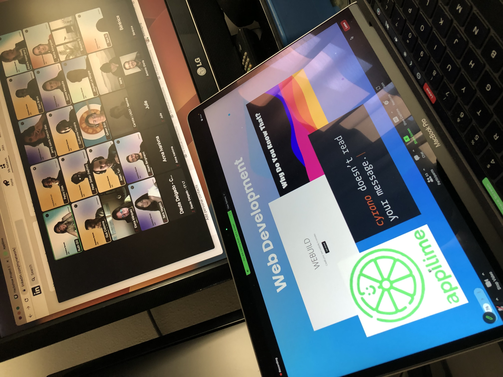

My Coding Journey
In this space, I will add some curious stories about my coding journey. It includes my progress, achievements and struggles. When possible, I will also add a screenshot to help picture a specific event. I hope you like it and that it also inspires you!
I finished the Web Development Bootcamp!
I am so excited to have finished the Bootcamp!! What an incredible journey.. The last week was super intense as we had to build the third and final project, a full-stack MERN application, using React and all the technologies we have learned during the course. I built a productivity app and it was voted to represent this bootcamp in the Hackshow, Ironhack's prestigious event to celebrate all the finalists from each course. Here’s a glimpse:
And here’s a photo I took during the Hackshow, where I presented the app and saw really interesting projects from all the bootcamps (Web Development, UX/UI, Cybersecurity and Data Analyst):
I never thought I would learn so much and I am very grateful to our teacher Jorge, which is an amazing person and is very dedicated to teaching us all these languages and preparing us for what’s next. I have learned a lot and would definitely recommend this experience to anyone trying to make a career change. Here's a screenshot of my certificate:
Next week starts the CareerHack, the follow-up by a specialized team that will help us find our first job. I am very excited about that! I have been updating my portfolio, LinkedIn profile and CV, hoping that they will help me improve them and finally start applying to Web Development jobs!
June 2023
Ironhack’s Bootcamp is amazing
I just finished Module 2 and the course has been incredible! It is way more intense than I expected, the labs (homework) are difficult and usually we have to stay a couple of hours after class to complete them. After each module, there is a big project that we have to build and present. The first project was a game using JavaScript canvas and classes. My project was a motorcycle game where the rider needs to avoid traffic and roadblocks. It has two levels and it is super entertaining. It was a lot of fun to build! Here’s a screenshot:

The second project was made with another student. This was very important since we got to train some Pair Programming and use Git and Github as a team, something that I have never done before. We built a full-stack application using a live Database and Models to store the data. We also used routes to navigate through the different pages which are rendered using Handlebars, a JavaScript library that I have never used before:
So far I feel great about my decision to start this course. I thought it would be mostly reviewing the concepts I already knew but I am learning a lot, the content is super updated and the teacher Jorge is very kind and patient.
May 2023
Ironhack!
After a lot of thinking I decided that I would give Ironhack a go. If becoming a Web Developer is what I want, then I believe that their course will help me achieve that. I need that discipline of having classes every day from 9 am to 6 pm, with a teacher giving lectures and homework night, building projects, presenting them, etc.
I start the 9-week course on the 10th of April and right now I am doing Module 0, which is a week of preparation to get ready for the intensive weeks. It consists of learning the basics of HTML, CSS, and JavaScript. It is online through Zoom conference and there are a lot of students. Here’s a picture of the first day:
April 2023
Ironhack?
There’s a programming school here in Barcelona that I’ve heard truly nice things of. It is called Ironhack and they have Web Development, UX/UI, Cybersecurity and Data Analyst intensive Bootcamps. They are expensive but I know people that completed them and say it is worth it. The content is very complete and updated and there are lots of labs and projects to train and start building up a portfolio. A teacher and an assistant would assist during the 9 weeks and if we complete it then there will be a follow-up by a career team, which will help the students find the first job. I decided to attend an open day at the school to clarify my doubts about the course and I enjoyed it a lot. Here’s a picture of the school:
March 2023
More Barcelona Activa courses
New year.. more opportunities! I took more Barcelona Activa courses, as I really enjoyed the previous experience with the React one. It is nice to have someone physically teaching in a classroom, and not just watching pre-recorded videos. This time I attended courses on Email Marketing, Trello with Agile Methodologies and Cybersecurity:
January 2023
TypeScript and more CS50
Every time I check Web Development job offers I see that more and more companies ask for TypeScript as a skill. This way, I continued the course that I had bought on Udemy and I find it really interesting. Although TypeScript is a bit too restrictive compared to JavaScript I guess that’s the point, security when writing code.
When I also have some extra time, I continue with the CS50 course, trying to complete it before the end of the year so I don’t have to repeat some of the exercises. The content is very difficult but very important to get a general knowledge about Computer Science.
November and December 2022
Barcelona Activa courses
As part of the municipal plan for technological development in Barcelona, there are several training centers that offer free courses in different IT areas. Here is a photo of the hall of one of these centers:
From many courses regarding coding, a lot were entry-level. I decided to attend the 3 days React for Beginners one. Even though I have good knowledge of React, I wanted to review some of its features and it would be the first time I have live coding training, as so far I have been doing all my learning online. It was in Catalan and the teacher was really helpful, as well as all the material available and installations. I will definitely try to attend more courses, even in other areas like Marketing.
October 2022
Back on track with CS50 and LinkedIn Learning
I didn’t have much time at the end of summer, but I managed to organize myself and check the situation on the CS50 course from Harvard, which I want to complete before the end of the year. As some of the progress migrated from 2021 to 2022’s version of the course, the modules I did before had to be redone. It was interesting to redo some of the early projects and finish some of the new labs. Now the remaining work is to watch lessons 9 and 10 and the final project, which I will try to finish by the end of this year.
On LinkedIn, I found the possibility to do some free small courses in the Learning section, which are quick courses available for 24 hours (if not on the Premium). I did 2 on React and they were very complete.
August and September 2022
Graduated from the Career Path!
I got my certificate!! It’s been some very intense months and I followed my coding schedule and after a lot of struggle with Advanced React I finally completed that module. The following module was interview preparation and then I got the email with my course certificate. Although I have to review a lot of concepts and keep learning, this was a big achievement and I am very happy about it:

I am now completing some extra exercises on React as it has a lot of difficult concepts and requires that I keep practicing it. For the next steps, I think I will start coding my project portfolio. I asked around and there’s this website called Netlify that connects to Github and can publish our code online for free. I am also learning Typescript on Scrimba. There’s a course about it and I started it because more and more companies use this technology. I have been looking into LinkedIn lately to check what’s on demand these days.
July 2022
The marvelous world of React
A good part of the Frontend Developer Career Path is about React. Starting to learn this JavaScript library is a great milestone on my coding journey. This is completely on another level of programming and before starting this module I took some extra lessons at the Scrimba academy to review some ES6 fundamentals, so I am extra prepared to learn React basics (which is not easy):
As solo projects we built simple pages using React, like this basic travel journal:
Apart from this, I enjoyed the previous module where we were taught the basics of a good UI/UX design. I am also using the MIMO coding app daily again, doing some article reading on the FreeCodeCamp website and participating weekly in the Scrimba Discord community. That Discord channel is great to clear some doubts on our code and reading about how people got hired after Scrimba. It’s also nice to help fellow students, as trying to explain a concept is also a way of learning…
May 2022
Scrimba 2.0
So far my coding schedule is going great. I have been able to code about 5 days per week. I started the Frontend Developer Career Path all over again and it’s good to review all the basic topics.
The refactoring of the course is fantastic and they introduced a lot of solo projects like a Color Scheme Generator or a Film Finder using a real API!
Regarding CSS I finally entered the world of Grid Layout. It’s strange to code it at first but can make our life easier in some cases, where using “Display: Flex” would be a lot of extra work:
April 2022
“Long time no see!”
Due to some personal situations, I was not able to code a lot during the past months. I have a job that I took some months ago to have time to focus on my studies. But the truth is that after spending 8 hours a day working on a computer it is not easy to learn how to code for a few more.
I decided I need to organize a weekly schedule and make sure I follow those hours, otherwise, I will never get to my goal: become a Frontend Web Developer!
I spent several days reviewing the code and projects I did until now and I have come to a decision: I need to go back to basics. Coding requires daily practice and 2 months without coding has left me very rusty on the concepts… Scrimba’s Frontend Path has some lesson refactors and I will start it from the beginning. This way I can review the fundamentals and prepare for the more advanced concepts.
Let’s go!! (Rocky theme song playing)
March 2022
Next-level JavaScript
At the beginning of the Frontend Developer Career Path, we covered the basics of HTML, CSS and JS. Now we are studying responsive websites and next-level JavaScript.
I feel very happy building projects. This is good because I like what I am studying! Here are screenshots of some of the games we learned and that I really enjoyed coding (Snake game and Pacman game):
November 2021
Scrimba is going great
The Scrimba platform is great! After completing Udemy’s course, this has been my main focus. The teachers explain everything wonderfully and the fact that we can edit their work on the video is fantastic. Here’s a screenshot of it:
August 2021
Cancellation of subscription to the blockchain academy
My second year at the Ivan on Tech Academy was not as productive as the first one. Since I struggled with Solidity language and decided to focus on mainly JavaScript, I just did a few courses there about blockchain in general. My favorites were concerning Decentralized Finance, very interesting. Considering the price I was paying against the benefit I was taking from it, I decided to not renew my subscription. It was strange to do it, as it was where I wrote my first lines of code. But I am now focusing on becoming a Frontend Web Developer and all my energy must be into that!
June 2021
Just completed the Web Dev Bootcamp!
I made it!! These last few weeks I was able to dedicate a lot of time to study. The final project was very complete. Basically, the teacher was showing us Backend while we were building the project.
The app has a homepage with brief info about the website. It's a place where we can create campgrounds and view all the different campgrounds uploaded by other users. Users can register and log in to view all the campgrounds or to create one. Campgrounds are shown on a real-world map and by clicking on one it will show all the info about it. Editing and deleting are also possible by the creator of the campground.
This was my first contact with a lot of technologies like validation (ExpressError and JOI), databases and models (MongoDB), sessions and cookies (Express Session), messages (Flash), authentication and authorization (Passport), files/image upload (Multer and Cloudinary), geocoding and maps (GeoJSON and Mapbox), security issues (Sanitize packages and Helmet) and deploying (MongoDB Atlas and Heroku). Most of all, I really enjoyed working with routing on Express.js and Node.js.
Here’s my promised certificate:
April 2021
Back to basics
After two weeks without coding, I continued with the CS50 Course on EDX. The weekly Problem Sets are always super difficult. They require a lot of dedication but it feels awesome when I complete them. But most important is not to stress and go back to basics and review some simple JavaScript:
March 2021
Udemy and Scrimba every free minute I have
I am continuing with Scrimba’s Frontend Developer Career Path (which is very motivating) and the “good old” Udemy’s Web Dev Bootcamp. I got a nice email with my progress on Udemy and it was very interesting to see how much time I’ve spent on the platform:
February 2021
First steps on Scrimba
New year, new life… Well for me is a “new platform”. Apart from continuing with the Udemy course, now I am a lot of time on the Scrimba platform. I started the Frontend Developer Career Path and it has tons of amazing videos, tutorials, exercises and solo projects. They also do live coding every week on Youtube and I am permanently connected to their discord channel, as it has very important updates. The community is also great and helpful. So far it is being an awesome experience!
January 2021
Scrimba
In some of the lessons at FreeCodeCamp, they use this interesting technology where we can stop the teacher’s video and edit their code. Sometimes that is how we do the exercise, incredible! That feature is from Scrimba, a coding platform that has many courses and collaborates with FreeCodeCamp. I have registered on their website and some days ago I got an email saying they have 74% off on the annual subscription fee and that they have launched a course called “The Frontend Developer Career Path”. I took the opportunity and bought it. I think that together with the Udemy and Harvard courses this will help me achieve my goal of becoming a Web Developer.
They even have a small course with some tips for the next year!

December 2020
FreeCodeCamp and coding challenges
Another resource I discovered was FreeCodeCamp. It has thousands of exercises and hours of coding explanations. I really enjoy practicing on their platform, it is very useful and it is free. I have been doing some JavaScript lately:

There are other platforms that I sometimes use to do their coding challenges, like HackerRank and CodeWars. I also continue to code on the MIMO app almost every day.
November 2020
New computer and restarting Web Dev Bootcamp
The small desktop computer I bought a year ago is getting very slow and crashing sometimes. I guess it is not powerful enough to handle running a lot of stuff at the same time. I bought something more powerful, with a lot more RAM. It’s still not super great as it has an integrated graphic card, but it can handle a second monitor if I want.
Also, I haven’t been able to code a lot during the summer and Colt Steele just refactored the Web Dev Bootcamp so it uses the new features from ES6. With this, I decided to restart the course from the beginning. This is a way to go over some of the basic concepts and update with the new features. I also find it very motivating to start again...
October 2020
Web Dev Bootcamp Exercises
The Udemy course has been a lot of fun. The teacher is Colt Steele and he has been teaching online and local courses for a long time. He is great! There are tons of exercises and I can practice a lot of HTML, CSS and JavaScript. Here are some screenshots of one exercise that we coded in the course, where we randomly generate a color and then we have to guess it based on the RGB values given:

Also, with the Web Dev Bootcamp, I am now using Visual Studio Code as my text editor. I got familiar with the key shortcuts and I think it works pretty well.
June 2020
First Github Contributions and BitDegree
I registered on Github some months ago and for some weeks now I started using it to upload some of my code. At first, it was the code for the Solidity solo project and now I am also uploading some of the exercises I do on the Web Dev Bootcamp. I hope that one day I will see nothing but green squares there:
I discovered some free courses offered by the BitDegree platform. They are simple but informative. I completed “Git Tutorial for Beginners” since I am now uploading code to Github. Next, I will try a Digital Marketing course.
Here’s the certificate for the Git course:
May 2020
Eloquent JavaScript book and Marketing Online
By recommendation of the academy, I bought the Eloquent JavaScript book. It is the 3rd edition (2018) so it already includes the ES6 JavaScript update. I find it a bit difficult in terms of the language used but I guess that all programming books are like these. Anyway I am learning and going over some concepts that I already forgot. I hope this book will help me master JavaScript someday!

I also enrolled in a Marketing Online course. It’s subsidized training, offered by the Spanish Government. It connects the development of web pages and marketing, mainly preparing them to be SEO ready. It includes some marketing projects and I have been learning some important concepts.
April 2020
Solidity language and announcement of a global pandemic
Following learning the basics of HTML, CSS, and JavaScript, the next course at the academy is the one about Solidity language. This is the language in which the Ethereum blockchain is coded and it is based on JavaScript. I managed to fastly do the first course as it was just an introduction to the language. It was fun to start coding some smart contracts. It required installing a lot of additional programs, as we need to simulate a blockchain. The only difficulty with the first course was setting up all the coding environments. I wrote it all on a whiteboard:

And here is a screenshot of the certificate for the first course:

Early this month, a pandemic was declared and everything was shut down, due to the Coronavirus that is going around everywhere. As I have to stay home every day, I have more time to study and I started the second course of the Ethereum Smart Contract Programming series. This one is very hard and requires us to build a solo working project. The teacher gives some initial orientation but then it is all on us. I understand that in the real world this is more or less how it works but coding a dapp and smart contract by myself is very difficult. I consulted some tutors at the academy and they gave me extra help. The project consisted of building a dapp that connects to our wallet and we can try to double some amount of ETH that we decide to bet. It then randomly gives either double ETH to the player or gets the ETH from the player. This is a screenshot of the frontend:
The tutor that was helping me liked the frontend design but told me that the Solidity code had a lot to improve to get the dapp running. I struggled a lot of days with writing the code and then I realized that I lacked some JavaScript fundamentals. With this situation, I decided to pause that course for a little bit and focus on mastering JavaScript.
In January I found a promotion on the Udemy platform and bought a Wed Development course. I think it is time that I go back to basics and start this course. It will give me more practice with JavaScript and then I can be ready to continue with Solidity programming.
March 2020
C++
Part of learning blockchain development is knowing the basis of C++. This language is known for its reliability, performance and efficiency. It is not as friendly as JavaScript but I still made it through the course. I had to install and use Code::Blocks, which is an Integrated Developing Environment used for this language. Here’s a screenshot of my certificate:

February 2020
First Certificates and LinkedIn
I finally got the certificate for the course “JavaScript Programming for Blockchain Developers”! Here’s a screenshot of it:

I now updated my LinkedIn (I created it a few months ago) so everyone can see I am a student of Ivan on Tech Academy. I am also uploading the certificates I get so it stays up online and public. I added some contacts and I will visit it when I have some spare time. I like to investigate what kind of jobs are open for what I am studying. Blockchain developer is in high demand!
January 2020
Harvard’s CS50 and MIMO
I discovered a platform with a lot of courses from worldwide universities and most of them we can attend for free. That’s EDX and one course that got my attention was Harvard’s CS50, Introduction to Computer Science. It is taught by Professor David Malan and it is amazing. It’s an entry-level course and is very well done. The teacher explains everything very well and he really knows how to keep our attention and motivation. At the end of each lecture, there is a Problem Set that is very very difficult. It is consuming some time but this knowledge helps me understand the essence of computer science and not just coding in general.
In addition, I downloaded an app called MIMO. It is a coding app that has a Wed Developing journey that passes through HTML, CSS, JS, and others. We can set an alarm and a daily objective so we do a bit of code every day.

December 2019
JavaScript and other resources on Youtube and the Internet
On the course I am doing at the academy they started teaching JavaScript. This really takes programming to a whole other level. Now I can manipulate pages and make them dynamic! jQuery is also taught, which is a library to make JavaScript easier. I prefer to just code with plain JavaScript but jQuery definitely helps with event handling.
To complement the course’s exercises, I am doing some extra work searching the web about the different concepts. Besides MDN (Mozilla Developer Network) I found the W3Schools page which explains the concepts very well and it’s also interactive.
On Youtube I am now following some coding channels and I really enjoy The Net Ninja. I created a local folder and I am trying their examples in Atom.
I am having fun with JavaScript. I really enjoy building stuff:

November 2019
The first code - October 2019
The course introduction taught me how to set up Atom which is a text editor that I will be using to follow the lessons.
I am so excited to have just coded my first HTML tags!! Here is a screenshot from this super event:

And here is the first “website” code:
I understand that this is not much for the real world but looking at almost 30 lines of HTML I do feel like a hacker!
I figured that watching the video lessons and coding at the same time would not be practical so I bought a small desktop computer just for learning (while watching the lessons on my laptop):


October 2019
The beginning
In 2018 I got interested in reading about blockchain. It said all over the web saying how it would revolutionize the world and I wanted to know how it worked. I spent some hours on Youtube and I was discussing it with a few friends.
It is now Autumn of 2019 and since I have some free time I decided to register in a coding/blockchain academy to fully understand how it functions and to maybe code myself a token project on a blockchain?!
I already subscribed to Ivan on Tech Youtube Channel because I really liked his news about technology and blockchain so I decided to give it a try at his coding academy. I bought full-year access on it.
This academy has some courses and I will be doing the Solidity “path”, which is the coding language used to code on the Ethereum blockchain.
September 2019